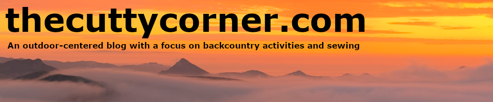

Tour de Los Padres 2026

Day 1
The day started with Rhys and I waking up at her aunt Julia's house in Carpinteria at around 5:30 to get to the Ventura Amtrak lot to prepare for the grand start at 7:30. After some words from the event organizers, the group started the neutral rollout towards the Sulphur Mountain climb. As soon as we hit the gate, things started to disperse. Rhys and I stuck together and soon met up with Drew and Ben VH. After descending from Sulphur Mountain, and doing my only set of manuals for the trip, we began the crux of day one: Sisar Road. During this section, we met up with our soon-to-be ride companion Steve, and we spent the rest of the day breaking up and meeting back up with them.


Pre-ride meeting with EC, Pier Folks, and some LP legends (left) / TDLP Queens (right)
After Sisar, we descended Lions Trail, which was a bit chunkier than I remembered, but a good time. Rhys fell and caught herself in a handstand, and she was saved by some fellow riders. After Lion Canyon, we began the long and arduous middle Sespe. The trail had some incredible views but took the better part of 3–4 hours. We finished at the 33, then had about 8 miles of road riding before turning off towards Chorro Grande. The 500 feet of climbing from the 33 to Oak Camp was filled with confusion and hunger, but we made it to camp around 10 PM. Rhys and I enjoyed some somewhat crunchy ramen and hit the hay, planning to wake up at 5 AM to hike our bikes up Chorro Grande.
Day 2
We woke up at 5, and with some needed motivation from Rhys, I made us breakfast and we began the hike-a-bike. Chorro Grande has been bookmarked in my mind for a long time as a hard climb after I completed it around 11 PM after a long day of riding during TDLP 2024. I was surprised to enjoy it this time around and broke it up by taking a 30-minute nap midway to check on Rhys, and another 45-minute nap at the top. Rhys and I were met by Steve and Ian at the top, and we descended Boulder Canyon Trail together.

Chorro Grande post-nap rig check
Boulder was running beautifully, and we all met up with Bob the cat at Ozuna Station and ate some lunch. From here, Rhys and I rode a short section of the 33 and turned left onto Tinta Trail to begin one of two mystery sections of the route. After crossing the creek, my hub creaking reached a point I couldn't ignore. I had some thin grease on me and decided it would be best to check the hub before it blew up. After pulling off the freehub body trailside, I realized that all the pawl springs had been bent flat, and only one was engaging. I bent all the springs back out, added a bit of grease, and it was fixed. This was hands down the best trailside repair I've had to date; thank goodness for field-serviceable hubs.

Calochortus venustus on Boulder
Tinta Trail was a bit brushy but so beautiful, and water was plentiful. We rode with Ian, Ben VDK, Topher, and Steve on and off, and after a couple hours reached the high point of the trail with Steve and enjoyed a lovely, well-earned descent to Foothill Road. We saw a few snakes on the way down, including a rattlesnake and a big gopher snake. As we rode Foothill into New Cuyama, I got the unfortunate news that Drew was dropping out due to stomach issues. We hung with him outside Noble Romans with a group of 15 riders while we refueled and resupplied for the final stretch.


Dry canyon rattler (left) / Fueling break (right)
Rhys and I went to the Buckhorn for a burger and got out quickly after an overwhelming dining experience. On the way out I realized someone had picked up my phone; I secured it and went to the C and H Market to get some food. I bought a block of cheddar and tortillas for our fireside quesadilla dinner. Rhys and I decided to split a Red Bull for the New Cuyama to Hog Pen Spring stretch, and freshly caffeinated, we rode under the full moon to our camp. On the way up we saw Western Toads, a Kangaroo Rat, and two unidentified cats on the side of Aliso Canyon above the camp.

Full moon Aliso Canyon
Upon reaching Hog Pen around 10 PM, we enjoyed the fire that Ben VH and Jesse had made and cooked quesadillas as Greg, Geoff, Ian, and Chase rolled in. After some nice chats, Rhys and I hit the hay in prep for our morning hike-a-bike up Aliso Canyon.
Day 3
With another 5:00 wake-up, Rhys, Ben VH, Jesse, and I started the climb up towards Sierra Madre Road. We did the hike in about 45 minutes and began the ride towards the Potreros at 7:20 or so. With a water fill-up and some quiet time at the Painted Rocks, we continued up towards Choke Cherry. After a few hours of climbing to the spring, Rhys and I met up with Ben VH and Jesse for a bit and came across Matt, the trail angel from Santa Barbara Canyon to Big Pine, who had taken it upon himself to keep Choke Cherry dialed. After some chats, Rhys and I rolled out a bit after the others and continued upward.

Condor country
From Choke Cherry to Big Pine, the conditions were great, and I was reminded why this section is by far my favorite on the route. I felt a real sense of magic through here, and being able to access it all was such a gift. After summiting, we began the descent to the hot springs. This section crept up on me, and the sporadic climbs were a bit tiring. At the Camuesa Saddle, we took a short break and began the descent towards Little Caliente. After a few climbs and many creek crossings, we arrived at Little Caliente where a proper party was afoot.


LP Queen (left) / An Arroyo Toad Rhys spotted (right)
Wes had dropped out in New Cuyama due to a brake issue the day before but decided to ride back out to rejoin the ride from Santa Barbara. Chad, Jeremy, Annika, Myles, and Trey had backpacked to the spring and did some mutual pancake aid for the riders while folks dipped in and out of the springs. We went to bed with full bellies, excited to finish the next day.
Day 4
Another 5:00 wake-up. Rhys was feeling a bit congested, so I made us some breakfast while she slept a bit more, and we departed around 6:30. From the start, I knew the weather would be incredible: foggy skies and temps around 50°F. Rhys and I climbed towards Jameson Lake from the Santa Ynez. After a nice gradual climb, we arrived at a creek below Middle Santa Ynez Camp. Rhys heard a whoop from up above, and we went back to camp to find Ben VDK eating some snacks. He claimed that this stop would be the most strategic call of the whole route, and we took his word for it. Rhys and I shared some extra warm food, drank some coffee, and hung out as Ian, Wes, Steve, and Jesse arrived. The group agreed that the tour route this year was tough as hell, and we were all glad to be able to finish it up in style.
From here we began the climb to Ocean View, and I was stoked out of my mind. Once we arrived at the Monte Arrido hike-a-bike, I decided to dial it in and get it done quickly. Up until this point I hadn't listened to any music on route, but I threw on some John Peel reggae sessions and began to run after Wes, who was charging up the climb. I reached a real state of flow during this and only had my foot slip once or twice on the steep climb. I reached the top, watched Wes ride away, and moments later was joined by Rhys. The foggy weather held fast through this whole section, and it made for some ultra-comfortable conditions.

One of many trailside fires
I hadn't ridden Ocean View in a few years, and it was amazing. It's so inspiring to see a 100% community-restored trail in great shape and get to shred it with friends. After an hour or so of prime descending, we reached the end of the trail where Lizzo had started a fire after bringing snacks up for the riders. We chilled there with the same crew from Middle Santa Ynez for a bit and continued descending to the Ventura River. Rhys and I had an eventful crossing of the river and met up with Steve again to finish it up. The three of us got to a parking lot and were met by Dwight, who was there doing rider support. The Red Bull and coconut water combo electrified me, and we rode down towards the pier.
Finish
One of my favorite things about TDLP is the people I've met. The welcoming nature of everyone on route allows for these flash friendships that are so fun to carry through the ride and beyond each year. On the first day, after meeting Steve, I told Rhys that I hoped we would finish the route together with him. Steve has some of the most infectious stoke I've ever experienced, and it was great getting to finish at the pier with him. Riding with older friends like Ben VDK, Wes, Jesse, and Ian was so special; having the real locals give tips and share their stoke throughout the last day was incredible. Coming away from the ride I felt a sense of belonging and a deeper love for the South Los Padres. The wilderness is unforgiving and nearly inaccessible and having a body that allows me to travel through these places with the people I love is something I am so thankful for. It's an honor to get to rode through these sacred places, and when one travels these lands it's impossible not to picture the lives lived by those who came before us.
We were met by Rhys's aunt Julie and her husband Daniel, as well as everyone who had finished a bit ahead of us. We cheered for the other remaining finishers, showered up in Carp, and made our way home and got into SLO around midnight. TDLP 2026 was such a treat, and I can't wait for next year.
Sights and Sounds of TDLP